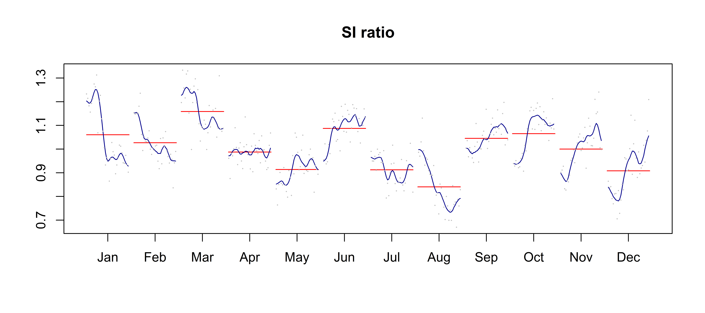
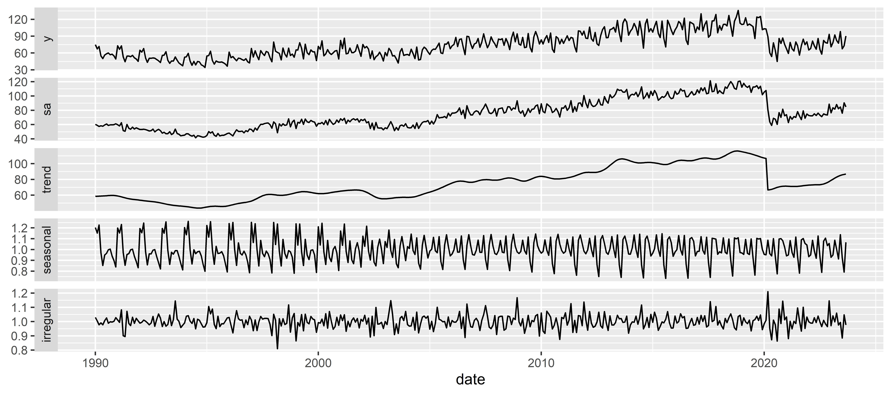

# Get all outputsa_x13_v3_ud$user_defined # remainder of the names
Plots and data visualisation
Examples
Final + “autoplot” layout
Regarima not available (yet ?) !!!
SI ratios (ggplot layout)
library("ggdemetra3")siratioplot(sa_x13_v3)

library("ggplot2")autoplot(sa_x13_v3)

Customizing specifications
Customising specifications: general steps
To customise a specification:
Start with a valid specification, usually one of the default specs (equivalent to cloning a spec in GUI)
Create a new specification
Apply the new specification to raw series
Customising specifications: local functions
Use of specific set_ functions
For the pre-processing step (functions defined in {rjd3toolkit}):
set_arima(), set_automodel(), set_basic(), set_easter(), set_estimate(), set_outlier(), set_tradingdays(), set_transform(), add_outlier() and remove_outlier(), add_ramp() and remove_ramp(), add_usrdefvar()
For the decomposition step with X11 (function defined in {rjd3x13}): set_x11()
For the decomposition step with Tramo-Seats (function defined in {rjd3tramoseats}): set_seats()
For the benchmarking step (function defined in {rjd3toolkit}): set_benchmarking()
Simple examples
# start with default specspec_1 <-spec_x13("RSA3")
Warning in spec_x13("RSA3"): 'spec_x13' est obsolète.
Utilisez plutôt ‘x13_spec’.
Voir help("Deprecated")
# or start with existing spec (no extraction function needed)# spec_1 <- sa_x13_v3_UD$estimation_spec
# set a new spec## add outliersspec_2 <- rjd3toolkit::add_outlier(spec_1,type ="AO", c("2015-01-01", "2010-01-01"))
## set trading daysspec_3 <- rjd3toolkit::set_tradingdays(spec_2,option ="workingdays") # JD+ regressors
# set x11 optionsspec_4 <-set_x11(spec_3, henderson.filter =13)# apply with `fast.x13` (results only)fast_x13(y_raw, spec_4)
Warning in fast_x13(y_raw, spec_4): 'fast_x13' est obsolète.
Utilisez plutôt ‘x13_fast’.
Voir help("Deprecated")
RegARIMA
Log-transformation: yes
SARIMA model: (0,1,1) (0,1,1)
SARIMA coefficients:
theta(1) btheta(1)
-0.7518 -0.5869
Regression model:
td AO (2010-01-01) AO (2015-01-01) LS (2020-03-01)
0.009237 0.127505 -0.003300 -0.480344
For a more detailed output, use the 'summary()' function.
Decomposition
Monitoring and Quality Assessment Statistics:
M stats
m1 0.990
m2 0.826
m3 1.695
m4 0.794
m5 1.768
m6 0.092
m7 0.358
m8 0.848
m9 0.401
m10 0.855
m11 0.720
q 0.842
qm2 0.843
Final filters:
Seasonal filter: 3
Trend filter: 13 terms Henderson moving average
Diagnostics
Relative contribution of the components to the stationary
portion of the variance in the original series,
after the removal of the long term trend (in %)
Component
cycle 18.360
seasonal 27.363
irregular 3.525
calendar 1.284
others 57.312
total 107.846
Residual seasonality tests
P.value
seas.ftest.i 0.822
seas.ftest.sa 0.990
seas.qstest.i 1.000
seas.qstest.sa 1.000
td.ftest.i 0.097
td.ftest.sa 0.210
Final
Last values
series sa trend seas irr
Oct 2022 78.47464 74.94917 73.67092 1.0470382 1.0173508
Nov 2022 77.53938 72.12701 74.89172 1.0750395 0.9630839
Dec 2022 93.41653 89.61958 76.70348 1.0423674 1.1683900
Jan 2023 70.98693 76.87485 78.89613 0.9234090 0.9743805
Feb 2023 78.60202 83.51024 80.94028 0.9412261 1.0317513
Mar 2023 92.36738 82.14206 82.65835 1.1244834 0.9937540
Apr 2023 82.39516 86.67780 83.90017 0.9505913 1.0331063
May 2023 77.50329 82.50510 84.63553 0.9393758 0.9748282
Jun 2023 98.20825 85.00288 85.05045 1.1553520 0.9994407
Jul 2023 67.51649 74.94242 85.48959 0.9009116 0.8766262
Aug 2023 72.94660 89.63367 86.04690 0.8138304 1.0416839
Sep 2023 90.38451 84.87867 86.70001 1.0648673 0.9789925
Adding user-defined calendar or other regressors
When adding regressors which are not predefined (like outliers or ramps):
rjd3toolkit::set_tradingdays() to be used when allocating a regressor to the calendar component
rjd3toolkit::add_usrdefvar() is used for any other component
Step 1: Creating regressors (1/2)
# create national (or other) calendar if neededfrench_calendar <-national_calendar(days =list(fixed_day(7, 14), # Bastille Dayfixed_day(5, 8, validity =list(start ="1982-05-08")), # End of 2nd WWspecial_day("NEWYEAR"),special_day("CHRISTMAS"),special_day("MAYDAY"),special_day("EASTERMONDAY"),special_day("ASCENSION"),special_day("WHITMONDAY"),special_day("ASSUMPTION"),special_day("ALLSAINTSDAY"),special_day("ARMISTICE")))
Step 1: Creating regressors (2/2)
# create set of 6 regressors every day is different, contrast with Sunday, based on french national calendarregs_td <- rjd3toolkit::calendar_td(calendar = french_calendar,# formats the regressor like your raw series (length, frequency..)s = y_raw,groups =c(1, 2, 3, 4, 5, 6, 0),contrasts =TRUE)# create an intervention variable (to be allocated to "trend")iv1 <-intervention_variable(s = y_raw,starts ="2015-01-01",ends ="2015-12-01")
Regressors can be any TS object
Step 2: Creating a modelling context
Modelling context is necessary for any external regressor (new v3 set up)
Step 3: Adding regressors to specification (trend)
# Add intervention variable to spec, choosing the component to allocate the effects to TRENDx13_spec_user_defined <-add_usrdefvar(x = x13_spec_user_defined,group ="r",name ="reg1",label ="iv1",regeffect ="Trend")